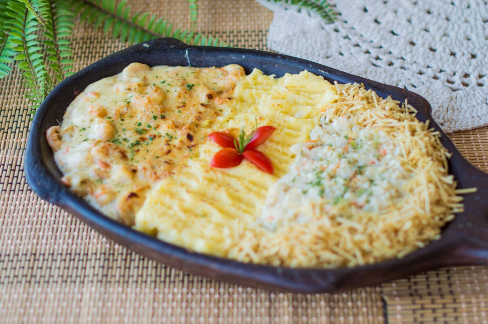
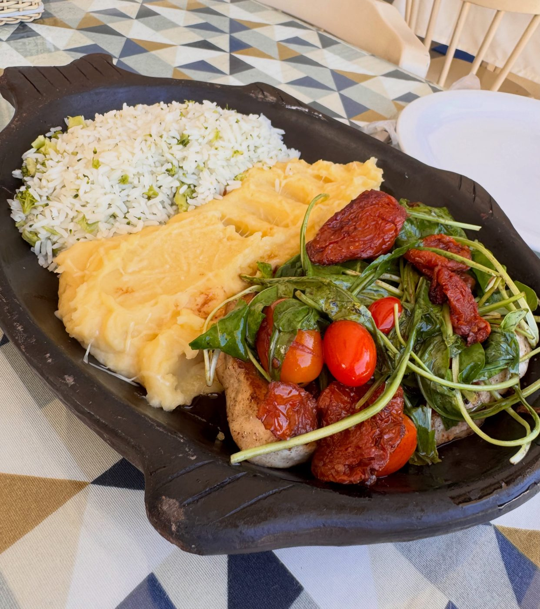
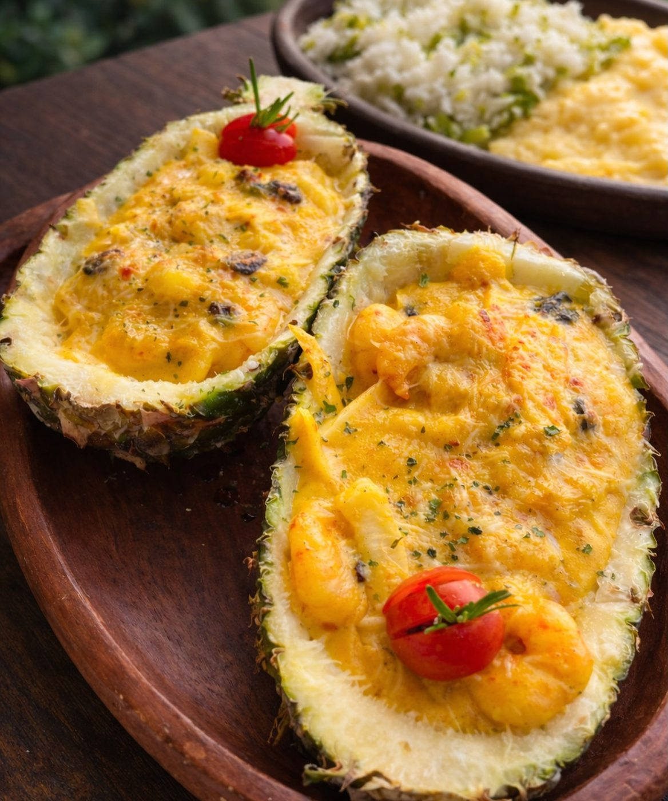
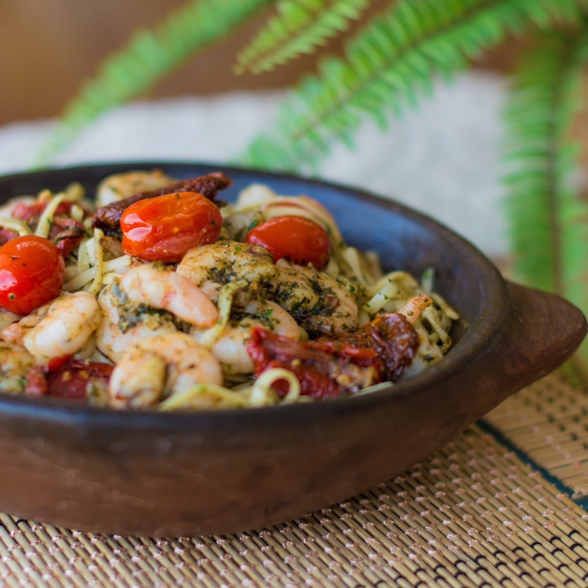
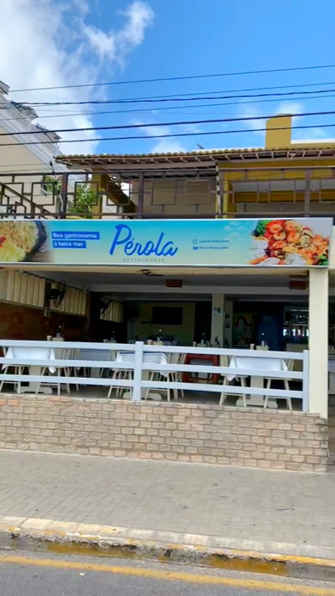
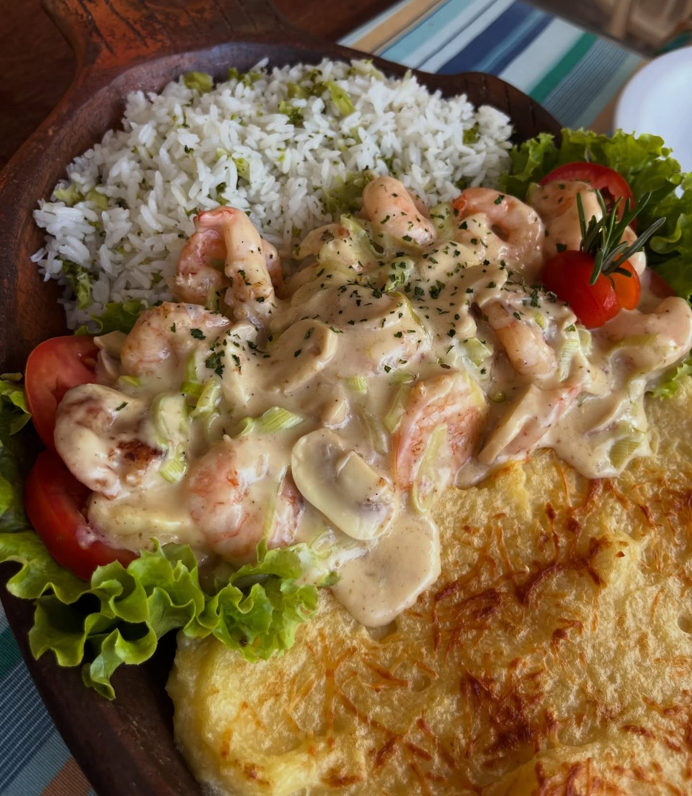

Camarão Parisiense
Camarão salteado no azeite com alho-poró e cenoura, molho branco gratinado.

Almoço e jantar com a vista da orla de Ponta Negra: moquecas, camarões, massas e petiscos, no ambiente leve e arejado do Pérola.
4,7 nota no Google Maps
Camarão salteado no azeite com alho-poró e cenoura, molho branco gratinado.

Servido no próprio abacaxi, um dos pratos mais pedidos da casa.

Massa com camarões e o frescor do pesto.
Valores e lista completa: cardápio atual do Pérola preços não incluídos no demo
O Pérola fica na Rua Erivan França, no coração da orla de Ponta Negra, a poucos passos da praia e com vista para o Morro do Careca. Gastronomia local, massas, drinques e sobremesas, num ambiente leve, colorido e arejado.


Fotos do Instagram do Pérola (@perola.restaurante).